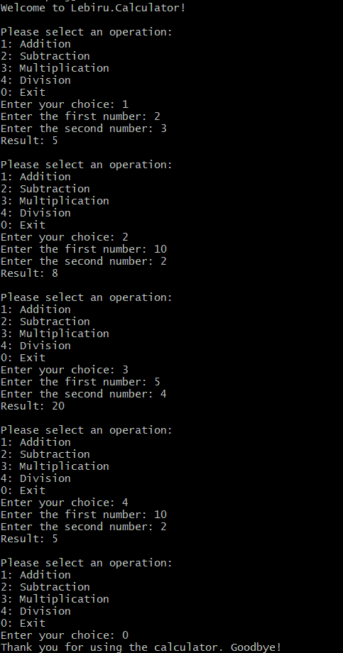

Unit Testing in .NET: Automated Quality Assurance for Your Code ⚗️

Have you ever imagined a job where your work is automatically checked and graded almost instantly? For programmers, this dream is a reality, thanks to unit testing. Like an engineering architect ensuring their blueprints are structurally sound, programmers use unit tests to validate the foundations of their code before building on it.

Another successful day thanks to unit tests!
By the end of this post, you will have a solid understanding of what unit tests are and how to use the powerful Theory attribute in xUnit to test multiple scenarios efficiently. Let’s dive into what unit testing is, why it matters, and how you can use it effectively in .NET.
What Is Unit Testing?
Unit testing is a development practice where isolated parts of your code - called “units” - are tested to ensure they behave as expected. Developers write tests to check the correctness of their code and get rapid feedback on whether their changes are successful or not. A well-formed unit test typically follows an "expected vs. actual" approach, where the developer defines the expected outcome and verifies that the actual result matches this expectation. This structure ensures clarity and precision in validating the behavior of the code.
Why Unit Testing Pays Off
Unit testing offers a range of benefits that make it an invaluable part of the development process. By acting as a safety net, unit tests ensure that future changes to the codebase do not introduce bugs, enabling developers to confidently refactor or add new features. Furthermore, unit tests provide clear documentation of the expected behavior of your code, helping both developers and users understand how the application should function. This combination of error prevention and improved clarity makes unit testing a critical tool for delivering robust and maintainable software.
Assign, Act, Assert
The "Assign, Act, Assert" pattern is the foundation of writing clear and effective unit tests. This structure ensures that tests are well-organized and easy to understand. In the Assign phase, you set up the necessary preconditions or inputs, such as creating objects or initializing variables. The Act phase involves invoking the method or function being tested, simulating the behavior you want to verify. Finally, the Assert phase checks that the actual outcome matches the expected result, confirming that the code behaves as intended. This systematic approach makes it easier to identify the purpose of each part of the test and quickly pinpoint issues when something fails. Following this pattern not only improves test readability but also enhances maintainability, as each test becomes a concise verification of a specific behavior.
Creating a Simple Calculator App with Unit Tests
We’ll create a simple app called Lebiru.Calculator that performs basic arithmetic operations: addition, subtraction, multiplication, and division. We will use unit tests to verify the correctness of each mathematical operation as well.
The following is written in C#, but can be applicable for any language.
Step 1: Define the Interface
First, let’s define an interface IOperation to ensure that all operations follow a standard Execute method:
public interface IOperation
{
double Execute(double num1, double num2);
}Step 2: Write the Operations
Next, implement the Execute method for each of the four classes for the basic math operations: Addition, Subtraction, Multiplication, and Division.
public class Addition : IOperation
{
public double Execute(double num1, double num2) => num1 + num2;
}
public class Subtraction : IOperation
{
public double Execute(double num1, double num2) => num1 - num2;
}
public class Multiplication : IOperation
{
public double Execute(double num1, double num2) => num1 * num2;
}
public class Division : IOperation
{
public double Execute(double num1, double num2)
{
return num1 / num2;
}
}Step 3: Build the Console Application
Finally, create the main logic that interacts with these operations:
// Welcome message
Console.WriteLine("Welcome to Lebiru.Calculator!");
// Keep running this app unless user stops it
while (true)
{
// Display menu for user selection
Console.WriteLine("\nPlease select an operation:");
Console.WriteLine("1: Addition");
Console.WriteLine("2: Subtraction");
Console.WriteLine("3: Multiplication");
Console.WriteLine("4: Division");
Console.WriteLine("0: Exit");
// Await user input
Console.Write("Enter your choice: ");
string input = Console.ReadLine();
// Exit app condition
if (input == "0")
{
Console.WriteLine("Thank you for using the calculator. Goodbye!");
break;
}
// Store the first number if it is really a number
Console.Write("Enter the first number: ");
if (!double.TryParse(Console.ReadLine(), out double num1))
{
Console.WriteLine("Invalid input. Please enter a valid number.");
continue;
}
// Store the second number if it is really a number
Console.Write("Enter the second number: ");
if (!double.TryParse(Console.ReadLine(), out double num2))
{
Console.WriteLine("Invalid input. Please enter a valid number.");
continue;
}
// Initialize the mathematical operation depending on the switch
IOperation operation = input switch
{
"1" => new Addition(),
"2" => new Subtraction(),
"3" => new Multiplication(),
"4" => new Division(),
_ => null
};
if (operation == null)
{
Console.WriteLine("Invalid choice. Please select a valid operation.");
}
else
{
try
{
// Execute the mathematical operation
double result = operation.Execute(num1, num2);
Console.WriteLine($"Result: {result}");
}
catch (Exception ex)
{
// Display error if execute operation failed
Console.WriteLine($"Error: {ex.Message}");
}
}
}If we run the app we can see the mathematical operations are running:
The Case for Unit Testing
Imagine dividing by zero in your calculator app. Without proper handling, you’ll likely encounter an unpleasant surprise:
The application outputs ∞ as the result when dividing by zero. For our simple calculator, we want to prevent the calculation from running and display an error to the user saying you cannot divide by zero.
Step 4: Write a Unit Test for Division
Using xUnit and FluentAssertions we’ll write a test to handle the divide-by-zero scenario:
[Fact]
public void Division_ThrowsExceptionOnDivideByZero() {
var division = new Division();
Action act = () => division.Execute(10, 0);
act.Should().Throw<DivideByZeroException>()
.WithMessage("Division by zero is not allowed.");
}Run the test and see that the unit test fails because our division method does not throw an exception (yet!):
Step 5: Fix the Code and Re-Test
Update the Division class to throw the exception as per below:
public class Division : IOperation
{
public double Execute(double num1, double num2)
{
if (num2 == 0) throw new DivideByZeroException("Division by zero is not allowed.");
return num1 / num2;
}
}Re-run the test, and now it passes! This means our divide-by-zero scenario is clear and properly handled.
Passed Lebiru.Calculator.Tests.OperationTests.Division_ThrowsExceptionOnDivideByZero(num1: 10, num2: 0) [< 1 ms]Testing Multiple Scenarios Using Theory Attribute
The beauty of unit testing is how easily you can scale it. By using xUnit’s [Theory] and [InlineData] attributes, you can run multiple scenarios without duplicating code.
Parameterize Your Tests
Each inline data parameter corresponds to the function arguments in order. So, for the first inline data attribute num1 is 2, num2 is 3, and expected is 5. By parameterizing the test method we can open up different testing scenarios easily and ensure the code passes by also passing the expected value and relying on the unit test to "run" the actual value.
[Theory]
[InlineData(2, 3, 5)]
[InlineData(-1, -1, -2)]
[InlineData(0, 0, 0)]
[InlineData(100, 200, 300)]
public void Addition_ReturnsCorrectResult(double num1, double num2, double expected)
{
var addition = new Addition();
var result = addition.Execute(num1, num2);
result.Should().Be(expected);
}Run the Tests
Running the tests is where all the hard work pays off. With parameterized tests, you can validate multiple scenarios without duplicating code, making your suite both efficient and comprehensive. Each test run acts as a checkpoint, ensuring your app behaves as expected across a variety of inputs. When all tests pass, it’s a green light to proceed with confidence, knowing that your code is robust and reliable. And when something fails, the precise feedback guides you directly to the issue, saving valuable debugging time. This iterative process not only solidifies your app’s foundation but also reinforces a culture of continuous improvement. Testing is no longer a chore—it becomes a rewarding step in crafting high-quality software.
Clone the Lebiru.Calculator App and Try It Out!
You can clone the repo and try running this application locally on your computer!
View the Repo on GitHubBonus: Add Advanced Operations
If you’re ready to take your skills to the next level, consider adding more complex mathematical operations, such as Power and Log. These operations will challenge you to handle edge cases and refine your testing techniques. For instance, what happens when you raise a number to the power of zero, or take the logarithm of a negative number? Writing unit tests for these scenarios not only deepens your understanding of the math involved but also strengthens your ability to anticipate and address potential issues in your code.
Conclusion
Unit testing is more than just a safety net; it’s a powerful tool that empowers developers to write better, more reliable code. By incorporating unit tests into your workflow, you gain the confidence to make changes without fear of breaking existing functionality. Unit tests document the expected behavior of your code, making it easier for other developers (and your future self) to understand and maintain it. They also foster a culture of collaboration, where testing becomes an integral part of the development process rather than an afterthought.
Adopting unit tests doesn’t just protect your code from bugs; it streamlines your workflow by identifying issues early in the development cycle. This proactive approach saves countless hours of debugging and ensures a smoother user experience. Additionally, testing frameworks like xUnit provide powerful tools such as the `Theory` attribute, allowing you to cover multiple scenarios with minimal effort. This scalability makes unit testing a long-term investment in the quality and maintainability of your application.
So, the next time you sit down to write code, remember the value of testing as an integral part of the process. Don’t just focus on getting the code to work once—ensure it works every time, under every condition. By embracing unit testing, you’re not just building software; you’re crafting solutions that are robust, reliable, and ready to stand the test of time.